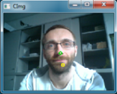

Objective
Mouse control (moving mouse cursor, clicking and dragging) by head movements.Description
By moving the head up/down or left/right the mouse cursor should move accordingly. A left click is performed by dwelling (stopping movement and waiting for some time). To do a right, double or drag click select the respective button in the ARE GUI and move the cursor to the location where the click should be performed at. The mouse speed can be changed by using the slider. Click on the On/Off button to toggle mouse control.

General Settings
Switch Inputs
Command Panel
Unlock Pattern
Click on screen quadrants to create unlock pattern.
Requirements
- Integrated Webcam or USB camera
- AsTeRICS 3.0 installed and ARE running
- OS: Windows, Linux (incl. RPi), Mac OSX
Major Plugins
Edit Model
Open in WebACSSource Repository
You can fork and modify this repository.Related Videos
Camera Mouse Demo ScreencastCamera Mouse Model Creation Screencast